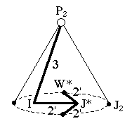
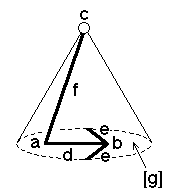

203
203
 205
205 Orbifold Atlas Home Page
Orbifold Atlas Home Page
 Crystallographic Topology Home Page
Crystallographic Topology Home Page
Underlying Topological Space: RP2 cone on D3; Figure Pseudo-Symmetry (FPS): m
Euclidean 3-Orbifold with Invariant-Lattice-Complex Letters
(left), Wyckoff Site Letters (right)
 
| FPS | Mult | Lattice Comp | Group Graph | Wyckoff Set | 2[4]Cover |
| 2-1 | I | 32' | a | ||
| 6-1 | J* | 2'2'2' | b | ||
| 8-1 | P2 | 30 | c | ||
| 12-1 | I6[-]J*2 | 3<2'>2'2' | d:a-b | ||
| 12-1 | J*2[W*]& | 2'<2'>& | (e:b-b)1 | ||
| 16-1 | I8[-]P22 | 2'<3>0 | (f:a-c)2 | ||
| 24-1 | m | g:de | |||
| 48 | 1 | h:f,g | |||
| 24-1 | I12[J2]J*4 | 2*=32'<1'>2'2'2' | (g1:a-b)3 | #229(g) | |
| 48-1 | P26[-]W*4 | 2*=30<1>2'2' | h1:c-e | #229(i) | |
| 48-1 | P26[-]J22 | 2*=30<1>1' | h2:c-g | [#200(e,h)] | |
| m | 48-1 | m* | (h3:dfg1)4 | #229(k) | |
| Struct-Mult | Critical Points | Heegaard Surf | Wyckoff Cut |
| BCC -1 | I/P2/W*/J* | HP2 2'0m{1} | d |
Lattice Points: (1) 1/2,0,1/2 + (-1/4,0,0) x2; (2) 0,0,0 + (1/4,1/4,1/4); (3) 0,0,0 + (0,1/4,1/4); (4) x,x,z
203
205
Orbifold Atlas Home Page
Crystallographic Topology Home Page
Page last revised: